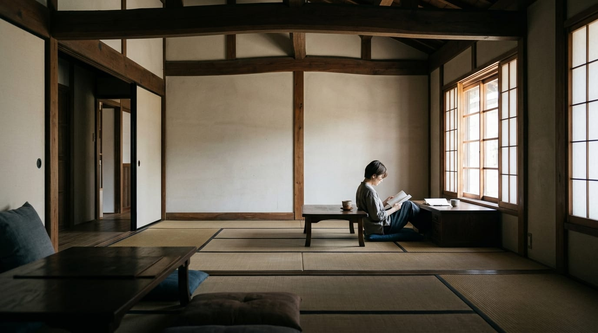

About
사용을 통한 보존.
가장 강한 보존은 건물이 계속 의미를 갖는 것이라고 믿습니다.

Our Approach
각 분야는 서로 깊이 연결되어 있습니다.
Conservation Dwelling Pte Ltd는 2012년 싱가포르에서 설립되었습니다.
부동산 관리와 보존 건축에서 출발한 우리의 일은 적응적 재사용, 호스피탈리티 개발, 플레이스메이킹, 호스피탈리티 운영을 아우르는 더 넓은 영역으로 발전해 왔습니다.
알맞은 쓰임이 없는 건물은 지키기 어렵습니다. 건물과 동네에서 분리된 호스피탈리티 콘셉트는 진정성을 잃습니다. 그리고 아무리 아름다운 콘셉트라도 실현 가능한 운영 모델이 없다면 오래가기 어렵습니다.
우리는 이 분야들을 하나로 묶습니다.
- 2012싱가포르에서 설립
- 부동산 관리보존 건축 관리·운용
- 적응적 재사용기존 건물의 새로운 쓰임
- 호스피탈리티 개발콘셉트와 운영 모델
- 호스피탈리티 운영사업의 운영
- 지역 플랫폼싱가포르 · 일본 · 한국
What We Believe
다섯 가지 원칙.
- 01있는 것을 존중합니다.기존 건물의 성격이 다음에 올 것을 이끌어야 합니다.
- 02쓰임에서 시작합니다.건물에 경제적으로 실현 가능한 목적이 있을 때 보존은 지속 가능해집니다.
- 03건물 너머를 생각합니다.성공적인 호스피탈리티 자산은 주변의 상점, 공예, 문화, 공동체를 함께 강하게 만들 수 있습니다.
- 04운영을 전제로 설계합니다.매력적인 콘셉트는 사업으로도 작동해야 합니다.
- 05현지와 함께 일합니다.국경을 넘는 전문성은 현지의 지식, 전문가, 파트너와 결합될 때 가장 잘 작동합니다.
Regional
싱가포르에 기반을 두고, 아시아에서 일합니다.
싱가포르는 Conservation Dwelling의 본사이자 경영 거점입니다.
현재 우리의 지역 활동은 싱가포르, 일본, 한국을 중심으로 하며, 특히 일본에서의 보존 중심 호스피탈리티와 적응적 재사용에 무게를 두고 있습니다.
시장 보기
Founder
Eric Lee
Eric Lee는 부동산, 호스피탈리티, 웰니스, 그리고 고객 접점 사업의 개발과 운영 전반에 걸친 경험을 가진 싱가포르 기업가입니다.
Conservation Dwelling을 통해 보존 부동산, 호스피탈리티, 적응적 재사용이 만나는 영역, 그리고 개성 있는 건물에 다음 세대의 쓰임을 줄 수 있는 상업적으로 지속 가능한 모델을 만드는 데 집중하고 있습니다.